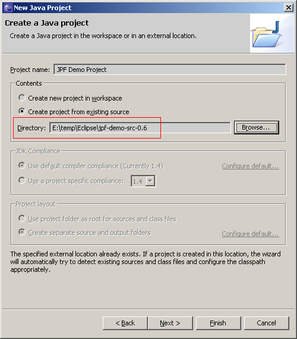
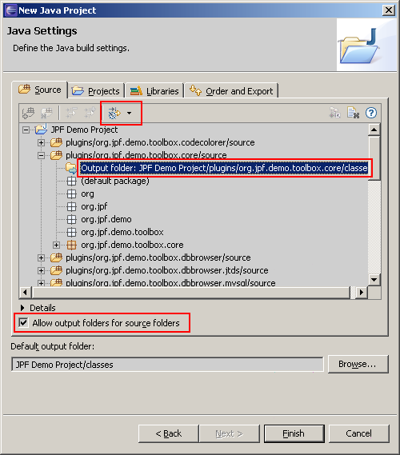
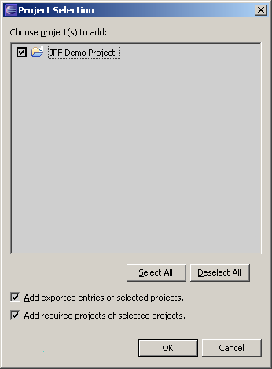
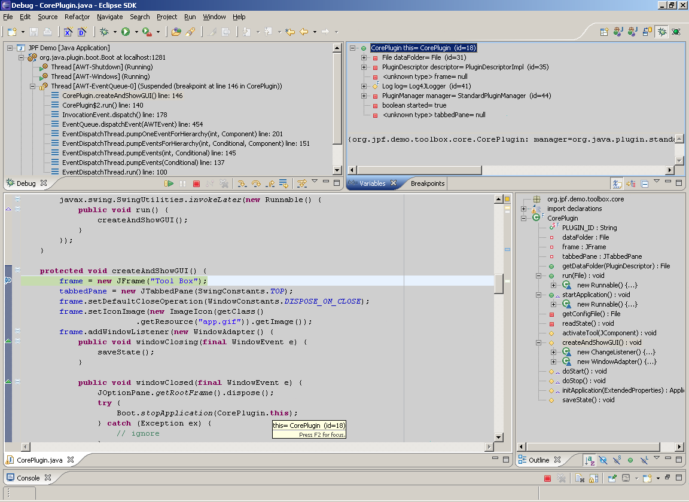

JPF-Demo as Project in Eclipse IDE
Note: for simplicity and concreteness, instructions prepared for JPF-Demo project but applicable to any JPF based application.
Preface
Download ZIP archive with JPF-Demo source code and unpack it into some location. This location will be the project "root" folder. Following instructions are created for Eclipse IDE version 3.1 but similar steps applicable to earlier versions also (tested with 3.0).
Note: JPF-Demo source distribution package already contains project files for Eclipse IDE - .project and .classpath files. You have to remove these files if you whant to go through steps in this tutorial. But for quick start with JPF-Demo source code simply import provided project into Eclipse IDE workplace.
Creating Project
Open Eclipse New Project dialogue and select Java Project wizard. In the Contents section enter location of the unzipped JPF-Demo source folder.

On the next step wizard scans all project folders to detect Java source files and libraries there. The result is shown on the screen. What you have to do here is to tell Eclipse to put compiled classes for each plug-in into separate folders named classes and located in corresponding plug-in folders. You have to create folder with such name in every plug-in directory that contains source code and point Eclipse to put output to those folders.


When all source/output folders configured, press Finish button. Now you should get configured JPF-Demo project. In the Package Explorer it looks like this.

Run/Debug Configuration
Open Run... dialogue and select Java Application on the left pane. Press New button to create new Run/Debug configuration. On the Main tab enter configuration name and Main class, for JPF-Demo project this should be org.java.plugin.boot.Boot because JPF-Demo uses JPF Boot Library for application starting.

Now switch to Classpath tab. Here Eclipse by default included all classes and libraries from the project that is good for usual "monolithic" applications but is wrong for JPF based application. In JPF application only "boot" level libraries and classes are required for application startup, all classes that come from plug-ins shouldn't be included into application classpath because JPF itself manages lookups and loading such libraries and resources. Thus you have to Remove the whole default classpath section from the configuration classpath...

... and include only jpf-boot.jar library.

Here the result.

The last thing that remains to do is to configure sources for plug-in classes for comfortable debugging. Switch to Source tab and press Add... button.

In the opened window select Java Project source type...

... and mark checkbox near the JPF-Demo project. Press OK button.

Now source configuration should look like on this screen shot.

Finally you may run JPF-Demo application and debug it.
